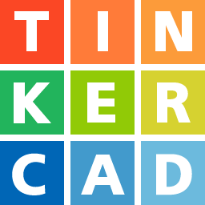

Este NodeBot lleva el nombre de M-14 (Morfyo-14). El M-14 fue diseñado para poder ser usado con Blokino. Con el M-14 se pueden hacer las siguientes actividades:
- Crear tus propias notas musicales, o usar las que ya tiene
Blokino.
- Crear tus propios emoticones o mensajes, y mostrarlos en la cabeza
del
M-14.
- Hacerlo mover como desees, sus piernas y brazos estan diseñadas de
tal manera que pueden hacer varios movimientos.
- Detectar objetos a ciertas distancias, con esto poder hacer que el
M-14 haga alguna acción cuando detecte un
movimiento.
Diviertete armandolo, para esto se tiene una guia donde especifica los componentes electronicos que se necesita como así tambien como se debe armar. Por último se tiene una sección donde podes usar algunas funcionalidades predeterminadas básicas de tu M-14.
Además de la versión estandar del M-14, también podes crear tu propia versión del M-14. Para que se tenga una base de los moldes 3D del M-14, podes acceder al perfil de Tinkercad.
Importante: para poder usar Tinkercad, hay que crearse una cuenta.